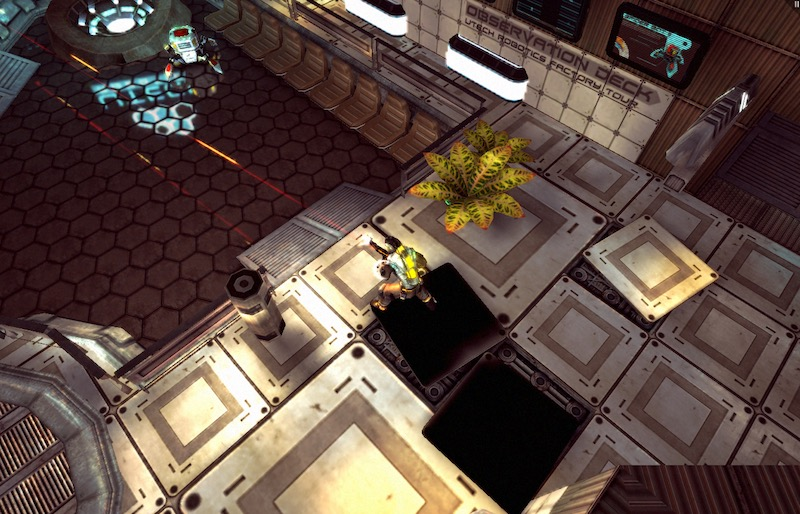

Uh-oh! WebAssembly isn’t enabled in this browser. To get an early preview of this experimental technology, at your own risk:
chrome://flags/#enable-webassembly and enable the switch.about:config and set javascript.options.wasm to true.See a preview of Microsoft Edge support and follow Safari support on WebKit’s feature status page.
 Play WebAssembly Play asm.js fallback
This is an experimental demo of Angry Bots, a Unity game which has been ported to WebAssembly. Fight robots and explore a 3D space station with realistic environmental effects in this top-down shooter. Movement is controlled by W, A, S, D or the arrow keys and aiming & firing is controlled by the mouse.
| Early multi-browser support | ✓ | Runs in experimental builds of Chromium, Firefox, and Edge. |
| Demo execution | ✓ | Full execution semantics implemented. |
| Stable binary format | ✘ | Binary format will be updated to match design iterations, until it is frozen for stable release. |
| Standard textual encoding | ✘ | Textual encoding will be standardized before stable release. |
| Stable tooling | ✘ | A mature toolchain for compiling and debugging WebAssembly will be available before stable release. |
| Stable JS API | ✘ | The Wasm object will be updated to allow additional behavior and introspection before stable release |